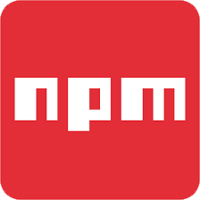

-- npm --ما به پکیج dependency یا وابستگی هم می گوییم و به این معنی است که پروژه ما به فلان پکیج وابسته است.
قبلا باید کتابخانه ها را دانلود و همچنین وابستگی های آن ها را هم دانلود می کردیم که این کار ما را درهنگام بروزرسانی و ... با مشکل رو به رو می کرد.
سایت رسمی npm
npmjs.com
npm یک پکیج منیجر برای js است
npm => js (Node Package Manager)
composer => php
pip => python
Node => محیطی برای اجرای کدهای جاوااسکریپت در سمت سرور
برای نصب npm شما باید Node.js را روی سیستم خود نصب کنید.
nodejs.org
TLS ===> Long Time Support ==> نسخه پایدار ==> Best
Current ===> نسخه فعلی اما ناپایدار که نیاز است باگ های آن برطرف شود.
npm ّبه صورت Global نصب می شود و ما در هرجای سیستم به آن دسترسی داریم.
*** برای اطمینان از نصب
in Cmd ===> node -v or npm -v
ما دونوع رابط کاربری یا User interface در سیستم های مختلف داریم.
1. رابط گرافیکی GUI
2. رابط کامند لاین CLI
رابط خط فرمان برای ویندوز cmd و برای مک و لینوکس terminal
npm به این صورت عمل می کند که یک فایل به نام package.json به روت اصلی پروژه ما اضافه می کند.
برای شروع روند به شکل زیر عمل می کنیم
برای ننوشتن کامل مسیرها در cmd ابتدا کلمه مورد نظر را بنویسید و Tab را بزنید نا خودش کامل کند
*** ابتدا به پوشه و روت مورد نظر می رویم.
in cmd ===> npm init
حالا npm برای ساخت package.json شروع به پرسیدن سوالاتی می کند
اولی: نام پروژه ==> که می توانیم نام جدید برای آن وارد کنیم و یا اگر Enter را بزنیم به صورت default اسم خود پوشه ای که در آن هستیم را برای پروژه در نظر می گیرد.
دومی : ورژن پروژه ==> می توانیم ورژن تعریف کنیم و یا Enter بزنیم تا خودش ورژن 1 را درنظر بگیرد.
سومی : description ==> در مورد پروژه که می توانیم خالی بگذارید و Enter بزنید.
چهارمی: entry Point ==> می خواهد بداند که نقطه شروع پروژه شما کدام است و پروژه شما باید از چه فایلی شروع به کار کند که به طور پیشفرض index.js است.
پنجمی: test command ===> که می توانیم دستورات کامند برای آن تعریف کنیم.
ششمی: git repository ===> که می توانیم ریپازیتوری گیت هاب یا کنترل ورژن را در آن قرار دهیم.
هفتمی: key word ===> ممکن است بخواهیم پروژه را بعدا در سایت npm یا جای دیگری منتشر کنیم که می توانیم کلمات کلیدی را در اینجا قرار دهیم تا اگر این کلمات سرچ شد پروژه ما به کاربر نمایش داده شود.
هشتمی: Author ===> اسم نویسنده که معمولا اسم خودمان را می نویسیم.
نهمی: لایسنیس ==> به صورت دیفالت ISC است که شما می توانید آن را با توجه به لایسنس هایی که می دانید تغییر دهیم.
حالا با زدن Enter می پرسد که فایل با این محتوا را ایجاد کنم یا نه ==> اگر Enter بزنیم ایجاد می کند و اگر No بزنیم رد می کند.
الان باید در پوشه فایل package.json ایجاد شده باشد.
اگر فایل را باز کنیم می بینیم که فرمت جیسون است و شامل key و value ها است.
{
"name" : "npm project",
"version" : "1.0.0"
}
{
"name": "npm",
"version": "1.0.0",
"description": "ali tutorial",
"main": "index.js",
"scripts": {
"test": "echo \"Error: no test specified\" && exit 1"
},
"author": "",
"license": "ISC"
}
این موارد باید حتما در هر پکیج جیسونی باشد.
npm ===> یک مخزن یا repository برای نگه داری پروژه های جاوااسکریپتی است. شامل پکیج های بیشمار است.
yarn هم از repository موجود در npm استفاده می کند.
برای پیدا کردن یک پکیج به سایت npm می رویم و در بخش سرچ نام مورد نظر را وارد می کنیم.
زمانیکه پروژخ را می اورد شامل اطلاعاتی است.
1. زمان انتشار
2. ورژن
3. public or private
تب اول ==> اطلاعات در مورد پروژه (Readme)
تب دوم : Explore => برای پکیج های پولی است.
تب سوم: Dependencies => وابستگی های این کتابخانه را به ما می گوید.
تب چهارم: Dependents => تعداد و کتابخانه هایی که از این کتابخانه که سرچش کرده ایم، استفاده می کنند را مشخص می کند.
تب پنجم: Versions => تعداد ورژن ها و اطلاعات و خود فایل های مربوط به هر ورژن را به ما نشان می دهد.
در سایدبار هم یکسری اطلاعات مانند نحوه نصب، تعداد دانلودها، نوع لایسنس، آخرین ورژن، زمانی که پکیج باز شود چقدر حجم دارد، تعداد فایل ها، تعداد مشکلات یا issues ، تعداد درخواست ها برای همکاری با کتابخانه مورد نظر، آدرس رسمی سایت، ریپازیتوری گیت هاب، آخرین انتشار و ... را در اختیار ما قرار می دهد.
moment => کتابخانه ای برای کار با تاریخ که نوع جلالی هم دارد.
sementic Version یا نسخه بندی معنایی
این اصل به ما می گوید که چگونه ورژن بندی کنیم تا ورژن ها استانداردتر باشد که سایت رسمی هم دارد به آدرس semver.org
خوشبخانه این سایت زبان فارسی هم دارد که می توانید از آن استفاده کنید.
این سبک از ورژن بندی به دیگران کمک می کند که متوجه شوند که روند پیشرفت پروژه شما به چه شکل در حال انجام است.
این سبک از 3 عدد تشکیل شده است. 1.2.3
*** عدد اول سمت چپ ==> Major version ==> زمانی که ما یک تغییر اساسی در پروژه خود ایجاد کنیم که این تغییر به احتمال زیاد با ورژن های قبلی سازگار نیست، یک عدد به این Major version اضافه می کنیم.
*** عدد وسطی ===> Minor version ===> زمانی تغییر می کند که ما یکسری پکیج به پروژه خود اضافه کردیم که با نسخه های قبلی هم سازگار است.
*** عدد آخری ===> Patch version ===> زمانی که یکسری باگ ها در پرژوه برطرف می شود این عدد تغییر می کند. اگر باگ های زیادی در یک نسخه برطرف شود این عدد می تواند خیلی بزرگ شود.
1.2.3 ====> patch *10 ====> می شود 1.2.13
npm install moment@>=1.3.4
این دستور میگه moment که ورژن آن بزرگتر و مساوی 1.3.4 و همچنین stable است را نصب کن.
علائم مورد استفاده در هنگام نصب پروژه ها
*** < ==> بزرگ تر از فلان ورژن 1.2.3<
*** > ==> کوچک تر از فلان ورژن 1.2.3>
*** =< ==> بزرگ تر و مساوی
*** => ==> کوچک تر و مساوی
*** Exact version ==> یکی من دقیقا همین ورژن را می خواهم @4.2.3
*** wildcard version ==> یعنی پکیج بین رنج را می خواهم
*.2.2 => هر چیزی بین 2.2 و 2.3 2.2.0=<X< 2.3.0 & X
این مورد تنها و تنها ورژن patch را اپدیت می کند.
این مورد minor را هم اپدیت می کند 1.* 1.0.0=<X< 2.0.0 & X
*** Tilde or Tilda ==> ~ ===> این مورد به شکل زیر عمل می کند
==> 1.3~ ====> 1.3.0=<X < 1.4.0 & X
*** Caret Version ===> ^ ==> این دستور از عددی که زدیم تا major بعدی را نصب می کند
1.3.2^ ===> 1.3.2=<X<2.0.0 & X ===> خود ماجور را اپدیت نمی کند.
بعد از ورژن هم از کلماتی استفاده می شود که به شکل زیر هستند.
*** alpha- ===> یعنی تنها یک سری عیب ها در پروژه برطرف شده است و هنوز باگ های حیاتی برطرف نشده است. توصیه نمی شود که از نسخه آلفا استفاده کنید.
2.2.2-alpha or 2.2.2-alpha.1
*** beta- ===> این نشان می دهد که باگ های حیاتی برطرف شده اند.
2.2.2-beta or 2.2.2-beta.1
*** rc- ===> به معنی release condidte ==> به این معنی است که نویسنده پیشنهاد می دهد که این نسخه را استفاده کنید.
alpha < beta < rc
*** dev- ===> می گوید که این نسخه برای حالت دولوپمنت است.
*** exprrimental - یعنی تجربی
برای بررسی راحت ورژن های یک پکیج و اطلاعات مربوط به هرکدام می توانیم از سایت زیر کمک بگیریم (به صورت سبز ورژن های یک پکیج را نشان می دهد.)
npm semver calculata
برای نصب یک پکیج به روش زیر عمل می کنیم
npm install packageName
npm i packageName
npm install packageName@2.3.3 // version select
npm install packageName --save // install package and add name's into package.json
npm install packageName --save -dev // install package and add name's into package.json in dev dependencies part
npm install packageName --save -dev == npm install packageName -D
حالا با یکی از این دستورات می توانیم پکیج مورد نظر خود را نصب کنیم.
زمانی که دستور نصب را زدیم علاوه بر package.json پوشه node_modules و package-lock.json هم ایجاد می شود.
داخل پوشه node_modules سورس کدهای پکیجی که نصب کرده ایم قرار می گیرد.
داخل حود فایل package.json هم یک مقدار جدید اضافه می شود به نام dependencies
"dependencies": {
"moment": "^2.29.1"
}
در حالت عادی دستورات npm i packageName و npm install packageName --save یک کار مشابه را انجام می دهد و به یک صورت فایل package.json را تغییر می دهند با نصب پکیج.
برای حذف یک پکیج هم به روش زیر عمل می کنیم
npm uninstall packageName
اگر دستور npm install packageName --save -dev یا npm install packageName -D را بزنیم نام پروژه به جای dependencies در package.json در داخل devDdependencies ذخیره می شود.
با دستور npm install packageName --save -dev می گوییم که ما به فلان پکیج تنها و تنها در حالت development نیاز داریم و در حالت production به آن نیازی نداریم.
زمانی که یک پکیج به پکیج های دیگری به عنوان وابستگی نیاز دارد، خود npm در هنگام نصب پکیج مورد نظر آن ها را هم نصب می کند و دیگری نیازی نیست شما خودتان را درگیر وابستگی ها کنید. اما توجه داشته باشید که به صورت خودکار پکیج هایی که مربوط به حالت دولوپمنت پکیج مورد نظر هستند را نصب نمی کند.
به این شیوه از نصب پکیج که آن را توضیح دادیم حالت local install می گویند که تنها در همان پروژه به آن دسترسی داریم اما می توانیم پکیج ها را به صورت global هم نصب کنیم تا در هرجایی به آن ها نیاز بود و داخل هر پروژه دیگری از آن ها استفاده کنیم.
منظور از نصب global این است که به جای نصب پکیج در پروژه، آن را در داخل سیستم خودمان نصب می کنیم و هرجا که نیاز بود از آن استفاده می کنیم.
فایل هایی که به صورت global نصب می کنیم به روش زیر می توانیم محل نصب آن ها را بیابیم
im my compute -> right click -> propertices -> advanced system setting -> Enviroment Variables -> dbl click on path --> find npm --> copy path (e.g. ==> C:\Users\HomaRayaneh\AppData\Roaming\npm ) ---> paste in addresbar my computer --> enter
این دستور ما را به پوشه ای که پکیج های global نصب شده اند می برد.
روش نصب گلوبال
npm i packageName -g
حذف پکیج های گلوبال
npm uninstall packageName -g
برای استفاده از یک پکیج بعد نصب باید حتما documention را بخوانید تا متوجه روش import کردن آن شوید.
const moment = require('moment');
require فایل مورد نظر را از پوشه node_modules برای ما import می کند. البته می توانید از import و export موجود در دستورات ES6 هم استفاده کنید اما Node به طور کامل ES6 را پشتیبانی نمی کند و امکان دارد با مشکلی مواجه شوید.
تفاوت require و import و export
//---- ES6 ==> ES modules
// foo.js
export function foo(){
return 'Hello Foo';
}
// index.js
import { foo } from './foo.js';
console.log( foo() ); // Hello Foo
//---- old ==> CommonJs modules
// foo.js
module.exports = function(){
return 'Hello foo';
}
// index.js
var foo = require('./foo');
console.log( foo() ); // Hello Foo
گاهی در
const moment = require('moment');
آدرس را دقیق به صورت ./ffoo.js وارد نمی کنیم. این به این دلیل است که بدون مسیر دقیق ما به package.json موجود در پوشه خود پکیج اشاره می کنیم و در این فایل در بخش main گفته که کدام فایل باید فراخوانی کند یا با main خود نویسنده گفته است که کدام فایل شروع کننده است
"main": "./moment.js",
برای اجرا دستورات و گرفتن خروجی از داخل cmd به روش زیر عمل می کنیم
const moment = require('moment');
console.log(moment);
in cmd ===> in root project ==> node addressFile
node index.js
در فایل package.json ورژن هر پکیجی که نصب می کنیم به صورت رنج با karet (^) نمایش داده می شود
"moment": "^2.29.1"
اگر اگر چیزی اپدیت شود باید زمانی که پروژه را به فرد دیگری می دهیم بداند که دقیقا باید از چه ورژنی استفاده کند که این اطلاعات در package-lock.json وجود دارند.
"dependencies": {
"moment": {
"version": "2.29.1",
"resolved": "https://registry.npmjs.org/moment/-/moment-2.29.1.tgz",
"integrity": "sha512-kHmoybcPV8Sqy59DwNDY3Jefr64lK/by/da0ViFcuA4DH0vQg5Q6Ze5VimxkfQNSC+Mls/Kx53s7TjP1RhFEDQ==",
"requires" : {}
}
}
version ==> ورژن دقیق پکیج
resolved ==> ادرس این پکیج در ریپازیتوری npm
integrity ==> برخی اطلاعات هش شده
requires ==> وابستگی های پکیج را مشخص می کند. زمانی که npm بعدا می خواهد این پکیج را نصب کند متوجه می شود که این وابستگی ها هم باید باشد. پس آن ها را هم دانلود و نصب می کند. حالا اگر هریک از این وابستگی ها اگر وابستگی دیگری هم داشته باشند، آن ها را هم دانلود و نصب می کند.
dev ==> اگر پکیجی به صورت devDependency نصب شود. این گزینه را هم دارد که true است.
package.json و package-lock.json خیلی مهم هستند و باید حتما در پروژه ما باشند. اگر این دو را داشته باشیم می توانیم با دستور زیر پوشه node_modules را ایجاد و تمام پکیج های مورد نیاز را هم که در node_modules بوده اند نصب کنیم.
npm install OR npm i
اگر پروژه را خواستیم جایی اپلود کنیم یا در اختیار دیگران قرار دهیم نیازی نیست node_modules را هم اپلود کنیم. ما بقیه فایل های پروژه به غیر از این پروژه را در اختیار دیگران قرار می دهیم و آن ها با زدن دستور بالا خودشان می توانند پوشه node_modules و فایل های داخل آن را ایجاد کنند.
آشنایی با برخی از دستورات کاربری npm
npm update
این دستور تمام پکیج های داخل npm را اپدیت می کند.
اما اگر خواستیم تنها یک پکیج را اپدیت کنیم از دستور زیر استفاده می کنیم
npm update packageName
برای شروع یک پروژه از دستور زیر استفاده می کنیم
npm init
گاهی با زدن دستور init نمی خواهیم که به سوالات پاسخ دهیم و می خواهیم خودش به صورت دیفالت آن ها را پر کند که در این صورت از دستور زیر استفاده می کنیم.
npm init -y
برای اپدیت خود npm هم می توانیم از دستور زیر استفاده کنیم.
npm install -g npm@latest
از دستور @latest می توانیم برای بقیه پکیج ها هم استفاده کنیم.
گاهی می خواهیم اطلاعاتی در مورد یک پکیج ببنیم که از دستور زیر کمک می گیریم
npm view packageName
می توانیم ورژن های یک پکیج را هم با دستور زیر ببینیم
npm view packageName versions
برای دیدن لیست پکیج هایی که نصب است از دستور زیر استفاده می کنیم
npm list // local package list
npm list -g // global package list
npm list == npm ls
برای حذف یک پکیج
npm uninstall packageName
npm un packageName
npm uninstall packageName -g // delete global package
گاهی نیاز داریم که پکیج هایی که استفاده ای ندارند و بلااستفاده هستند را پاک کنیم که دستور زیر این کار را برای ما انجام می دهد.
npm prune
گاهی هم نیاز داریم که پکیج های تکراری را حذف کنیم که از دستور زیر کمک می گیریم
npm dedupe
گاهی می خواهیم بدانیم که کدام پکیج ها منسوخ شده اند که دستور زیر اسم آن ها را به ما می گوید
npm outdated
اسم سایر دستور کاربردی در بخش cli سایت npm وجود دارد که می توانید آن ها را مطالعه کنید.
اگر پکیجی که با npm نصب میکنیم وابستگی از گیت هاب داشته باشد خودش با دستور git ان را نصب و فعال می کند.
npm help
لیستی از کل کامندهای در دسترس در اختیار ما قرار می دهد.
npm search
نشان می دهد به ما انچه که به صورت عمومی در دسترس است. همچنین برای جستجوی یک پکیج هم می توانیم از آن استفاده کنیم.
npm public
با این دستور میتوانید پکیج خود را برای ثبت در سایت npm اپلود کنید البته قبلا باید در سایت لاگین کرده باشید
npm access
می توانید سطح دسترسی به پروژه را برای دیگران یا تیم خود تغییر دهید
npm bin
npm bin -g
نمایش پوشه bin و محتویات آن
npm cache add
اضافه کردن چیزی برای کش
npm cache clean
npm cache clear
npm cache rm
هر 3 دستور تمام محتویات پوشه کش را خالی میکنند.
اگر دستور
npm help
را بزنیم لیست دستوراتی که می توانیم برای npm استفاده کنیم را می آورد
می توانیم برای استفاده از دستورات هم از help استفاده کنیم
npm command -h
npm update -h
برای پاک کردن cmd هم می توانید از دستور cls استفاده کنید
اگر نیاز بود ورژن فعلی پکیجی را ببینیم از دستور زیر استفاده می کنیم
npm view packageName version
npm script => یک قابلیت است که به ما امکان می دهد تا دستورات را بتوانیم از طریق npm اجرا کنیم.
"scripts": {
"test": "echo \"Error: no test specified\" && exit 1"
},
الان این اسکریپت شامل دو دستور است که با && از هم جدا شده اند
برای اجرا اسکریپت هم به روش زیر عمل می کنیم
npm scriptName
npm test
برای مثال برای اجرای یک فایل می توانیم به این روش عمل کنیم
"scripts": {
"test": "node index.js"
},
npm test
برای رنگ بندی کردن کنسول یا cmd در npm از این پکیج استفاده می کنیم.
npm i colors -D
سپس در فایلی که می خواهیم دستورات npm از آن اجرا شود به روش زیر عمل می کنیم
var colors = require('colors');
console.log('Hello npm'.green);
اسکریپت ها در npm دو نوع هستند دیفالت و سفارشی
دیفالت مانند test
npm test
npm pretest
این دستور قبل از test اجرا می شود
npm posttest
این دستور بعد از test اجرا می شود
npm stop
این دستور هم prestop و poststop را دارد.
npm start
این دستور به طور پیشفرض فایل server.js را فراخوانی می کند و اگر شما این فایل را نداشته باشید، به شما ارور می دهد. حالا می توانیم فایلی که فراخوانی می کند را تغییر دهیم.
in package.json
"scripts": {
"test": "node index.js",
"start" : "node ./src/ali.js"
},
"scripts": {
"test": "node index.js",
"prestart": "node ./src/prestart.js",
"start" : "node ./src/ali.js"
},
npm prestart
npm poststart
npm restart
npm prerestart
npm postrestart
دستور restart می آید دستورات stop و start را هم در کنار خودش اجرا می کند.
برای دستوراتی که خودمان به صورت سفارشی تعریف می کنیم باید به شکل زیر صدا زده شوند.
npm run-script name
// OR
npm run name
npm run-script ali
"scripts": {
"test": "node index.js",
"prestart": "node ./src/prestart.js",
"start" : "node ./src/ali.js",
"ali" : "echo \"this is custom script for ali\" "
},
گاهی نیاز داریم که چند دستور سفارشی npm را باهم اجرا کنیم که در این صورت به پکیج npm run all نیاز داریم.
npm i npm-run-all
"scripts": {
"xxx": "echo \"this is custom script for xxx\" ",
"ali": "echo \"this is custom script for ali\" ",
"all" : "npm-run-all ali xxx"
},
npm run all
پوشه .bin
------همزمان با نصب پکیج npm run all پوشه .bin هم در پوشه node_modules ایجاد می شود. محتویات پوشه .bin با توجه به نوع سیستم عامل شما (windows,Mac,Linux) ایجاد میشود. محتویات این پوشه در لینوکس و مک تقریبا مشابه است اما در ویندوز کمی متفاوت است. در ویندوز به ازای هر فایل 3 تا ایجاد می شود که ما کار .cmd ها داریم اما در مک و لینوکس تنها یک فایل به ازای هر فایل ایجاد می شود.
@ECHO off
SETLOCAL
CALL :find_dp0
IF EXIST "%dp0%\node.exe" (
SET "_prog=%dp0%\node.exe"
) ELSE (
SET "_prog=node"
SET PATHEXT=%PATHEXT:;.JS;=;%
)
"%_prog%" "%dp0%\..\npm-run-all\bin\npm-run-all\index.js" %*
ENDLOCAL
EXIT /b %errorlevel%
:find_dp0
SET dp0=%~dp0
EXIT /b
in index.js
#!/usr/bin/env node
/**
* @author Toru Nagashima
* @copyright 2015 Toru Nagashima. All rights reserved.
* See LICENSE file in root directory for full license.
*/
"use strict"
//------------------------------------------------------------------------------
// Main
//------------------------------------------------------------------------------
require("../common/bootstrap")("npm-run-all")
"bin": {
"run-p": "bin/run-p/index.js",
"run-s": "bin/run-s/index.js",
"npm-run-all": "bin/npm-run-all/index.js"
},
به این شکل از تعریف اسکریپت ها که کدهای در پوشه .bin ذخیره می شوند و ما به این شکل به آن ها دسترسی داریم executable script می گویند.
npx یک package runner است و پکیج های باینری یا executable پکیج ها را بدون دانلود برای ما اجرا می کند. زمانی که برای مثال از دستور زیر استفاده می کنیم
npm nuxt create-app
ابتدا می اید پکیج باینری nuxt را دانلود می کند و آن را به صورت گلوبال روی سیستم ما نصب می کند. حالا ما هر زمان که خواستیم می توانیم با زدن دستور create یک پروژه nuxt ایجاد کنیم اما این روش یکسری معایب دارد. برای مثال اگر ورژن جدیدتری از nuxt بیاید ما مجبور به دانلود و اپدیت آن هستیم. اما npx می گوید تو دستور را بزن من بدون آن که پکیج باینری را دانلود کنم، یک پروژه nuxt برای تو ایجاد می کند. در حقیقت با زدن دستور npx از روی جدیدترین نسخه nuxt یک پروژه nuxt برای ما ایجاد می شود بدون آن که پکیج باینری آن به صورت گلوبال نصب شود
npx nuxt create-app
yarn مانند npm یک package manager است.
yarnpkg.com
yarn عملکردی دقیقا مشابه npm دارد و توسط facebook ایجاد شده است. yarn از لحاظ تکنیکی و قدرت اصلا رقیب npm نیست زیرا خودش پکیج های مورد نیاز را از سایت و repository موجود در npm برمی دارد. فیس بوک yarn رو ایجاد کرد که کاستی های npm را برطرف کند اما npm از ورژن 5 جهش های قدرت مندی مانند npx و package-lock.json رو داشت که yarn را پس زد. همچی در یارن و npm مشابه است از نظر package.json و دستورات و همچنین node_modules و تنها تفاوت این است که npm فایل package-lock.json دارد اما yarn به جای آن فایل yarn-lock.json دارد.